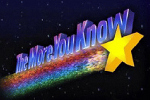
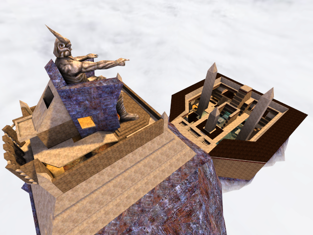
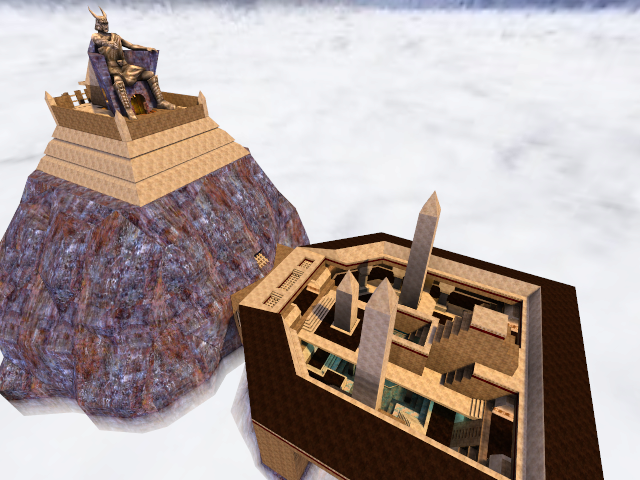
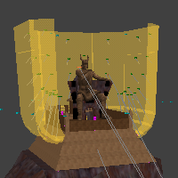
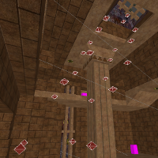
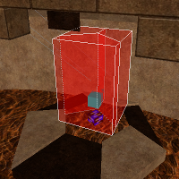

Lost Colossus (arena in When Worlds Collide)
- Quake 3 Rocket Arena / CPMA Clan Arena, 8-14 players
- released February 2001
When Worlds Collide is a multi-arena map for use with the Rocket Arena 3 (RA3) or CPMA mod, from the Multi Mapper Multi Arena (M3A) project. My contribution to this map was the teamplay arena Lost Colossus: a long-abandoned temple complex of an ancient civilization, spanning two lofty plateaus in a mist-wreathed mountain range.
Several other authors contributed smaller arenas in a variety of themes, beautifully crafted and great fun to play. I won't be writing about the other arenas on this page, but the second row of thumbs in the gallery below contains two images from each of the other arenas, just to show them off. Check the readme for more information.



No bot support in this map, unfortunately! RA3 doesn't have bots, and this map was created before CPMA supported rocket arena maps.
Downloads & Things
• Prerequisite
- You'll need a Quake 3 mod that can handle multi-arena maps, either CPMA or Rocket Arena 3 (ra3180.zip) 174 MB .
• Map
- When Worlds Collide (m3amap1.zip)
- readme — included in zipfile
• Source (not required)
- map source (lostcolossus_source.zip)
- readme — included in zipfile
Overview
Since Lost Colossus is a rocket arena map, it contains no items. The playable surface is made up of two areas. The main (lower) area is largely open to the outdoors, but there is an underground room beneath the Colossus and another at the end opposite the Colossus. The area around the Colossus can be good for observing and sniping, but it is vulnerable to attack from the underground rooms via jumpshaft or teleporter. A few other teleporters help provide extra connectivity around the main area too... in general, there's a bit of a learning curve for effective map traversal.


Notes
• Genesis
Lost Colossus actually started life as an idea for a Quake 3 Fortress map. Opposing teams would start in the lower area, initially separated from each other but converging on a common path to fight their way up the inside of the mountain to an objective. I was still in the "noodling around" phase when the M3A project started, and I decided to try to repurpose the texture theme and general structure for a large clan arena.
• Design
This is a huge departure from a typical clan arena layout; fortunately, the M3A project was able to attract a solid group of RA3-experienced playtesters. As a result, Lost Colossus has several layout tweaks — and some heavy lifting from the teleporter placement — to de-emphasize hiding, eliminate super-defensible areas, and allow knowledgeable players to chase and cut off a fleeing enemy.
Less fortunately, m3amap1 didn't get accepted in the RA3 community, and I'd guess that it's largely the fault of my arena. For a third-party map, first impressions are everything, and that's bad when a map requires a player to go through a learning curve before they can effectively punish "lame play." Also there probably still are real problems with the map; sometimes you can't completely force a strange layout into shape. If I had more RA3 chops of my own, perhaps I would have clued in to more design pitfalls and been able to better use the playtesters.
• Theme
The teleporter model and most of the brick and stone textures are derived from materials provided by Todd "Mr.CleaN" Rose (his "Egyptian" set). The Colossus and fountain models are based on models from, respectively, Bjornar Johansen and Ranjeet Singhal; I think that both were entries in a model-making contest for QuakeCon 2000.
• Tricks

• For an arena that is ostensibly set on top of a mountain, Lost Colossus is surprisingly resistant to death-by-falling. If you get knocked off the back or side of the area around the Colossus, for example, you're going to be "blown" back into the playing area, regardless of your exit vector. It's a fun effect; you get a second of freefall over open space before the push kicks in, so that (at least the first time this happens) you can experience a momentary holyshit reaction.
The flimsy fiction behind this behavior is that... well, it's really windy up there. The real mechanism is a carefully oriented shell of jump triggers. A similar protection exists for a side opening in the lower area, but it's not nearly as funky looking in the editor.

• I didn't want sharp shadows in the warmly-lit indoor areas, but I didn't want a blandly even ambient light either. To help simulate scatter along the light shaft from a major light source, I used chains of point light entities leading out from the source.
The compiled result doesn't obviously look like scatter from those sources, but that's for the best... varied and soft lighting is all that I was after. The light compiler available these days (in q3map2) would take care of these sorts of effects without requiring a mapper to jump through any such hoops.

• The teleporter that takes you to the Colossus services three different destinations in that area; one behind the throne, and one on each shoulder. You can pick a destination by entering the teleporter from a different direction, as it is composed of three teleporter triggers.
The readme mentions this, and there are markings in the ceiling over the teleporter that hint at this behavior, but I'd bet that most players never realize. Which is probably the reason that most mappers don't do this sort of thing, although I know I'm not the first; I remember seeing a multi-destination teleporter in a Quake map as early as 1997 (Contaminate by Dennis "headshot" Kaltwasser).
• Useless Trivia
The Tolkien-esque script glowing on walls around the map is from a font for the synthetic language Denden. I picked it because a) it looked neat, and b) it was free for anyone to use. Apparently it's part of an imaginary world that a particularly persistent Dutchman has been tinkering away at for decades.
 ) except where indicated otherwise
) except where indicated otherwise{kind=link}
{kind=link}
{kind=link}
{kind=link}
{kind=link}
{kind=link}
{kind=link}
{kind=link}
{kind=link}
{kind=link}
{kind=link}
{kind=link}
{kind=link}